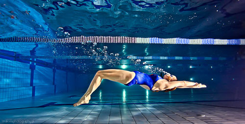
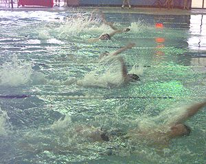
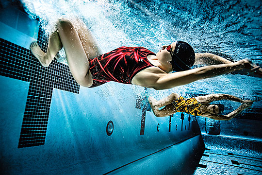

History
Backstroke is an ancient style of swimming, who owes most of what it has to Harry Hebner.[1] It was the second stroke to be swum in competitions after the front crawl. The first Olympic backstroke competition was the 1900 Paris Olympics men's 200 metre.[2]
Technique
In the initial position, the swimmer performing backstroke lies flat on the back; arms stretched with extended fingertips, and legs extended backwards.

Arm movement
Backstroke swimming (amateur competition, non-optimal style)
In backstroke, the arms contribute most of the forward movement. The arm stroke consists of two main parts: the power phase (consisting of three separate parts) and the recovery.[3] The arms alternate so that always one arm is underwater while the other arm is recovering. One complete arm turn is considered one cycle. From the initial position, one arm sinks slightly under water and turns the palm outward to start the catch phase (first part of the power phase). The hand enters downward (pinkie finger first) then pulling out at a 45 degree angle, catching the water.
During the power phase the hand follows a semi-circular path from the catch to the side of the hip. The palm is always facing away from the swimming direction, while remaining straight as an extension of the arm, and the elbow always points downward towards the bottom of the pool. This is done so that both the arms and the elbow can push the maximum amount of water back in order to push the body forward. At the height of the shoulders, the upper and lower arms should have their maximum angle of about 90 degrees. This is called the Mid-Pull of the power phase.
The Mid-Pull phase consists of pushing the palm of the hand as far down as possible with the fingers pointing upward. Again, the goal is to push the body forward against the water. At the very end of the Mid-Pull, the palm flaps down for a last push forward down to a depth of 45 cm, creating the finish of the power phase. Besides pushing the body forward, this also helps with the rolling back to the other side as part of the body movement. During the power phase, the fingers of the hand can be slightly apart, as this will increase the resistance of the hand in the water due to turbulence.
To prepare for the recovery phase, the hand is rotated so that the palms point towards the legs and the thumb side points upwards. At the beginning of the recovery phase of the one arm, the other arm begins its power phase. The recovering arm is moved in a semicircle straight over the shoulders to the front. During this recovery, the palm rotates so that the small finger enters the water first, allowing for the least amount of resistance, and the palms point outward. After a short gliding phase, the cycle repeats with the preparation for the next power phase.

Leg movement
The leg movement in backstroke is similar to the flutter kick in front crawl. The kick makes a large contribution to the forward speed, while significantly stabilizing the body.
The leg stroke alternates, with one leg sinking down straight to about 30 degrees. From this position, the leg makes a fast kick upward, slightly bending the knee at the beginning and then stretching it again in the horizontal. However, there are also frequent variants with four or only two kicks per cycle. Usually, sprinters tend to use 6 kicks per cycle, whereas long distance swimmer may use fewer.